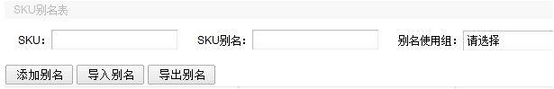
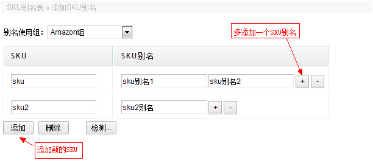
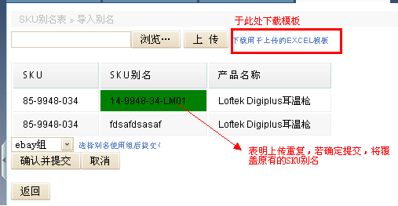

指ERP系统的SKU在其它平台或系统如 “金蝶，Amazon，ebay, newegg”对应的SKU。
功能一，查询。

功能二，添加新SKU别名。
单条添加界面如下，填写完后点击检测，若数据无误则自动显示保存按钮提交即可：

通过导入表格批量添加：

步骤一、下载表格模板，填写SKU与别名。
步骤二、上传填写好的表格。
步骤三、选择组别。
步骤四、确认提交。
功能三，导出数据。（注意，导出的是当前罗列的所有数据。）